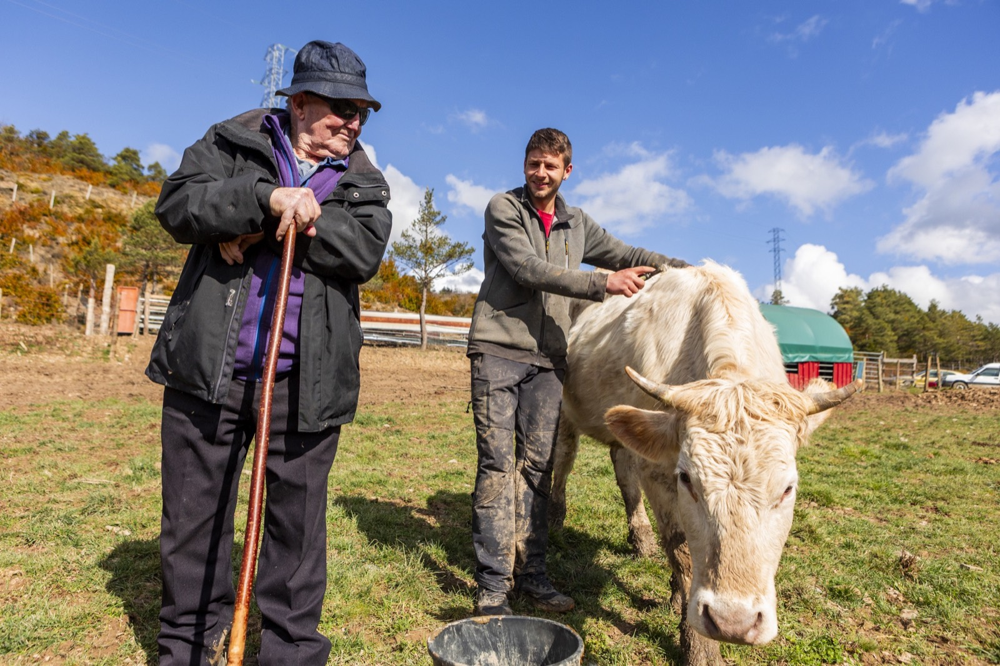
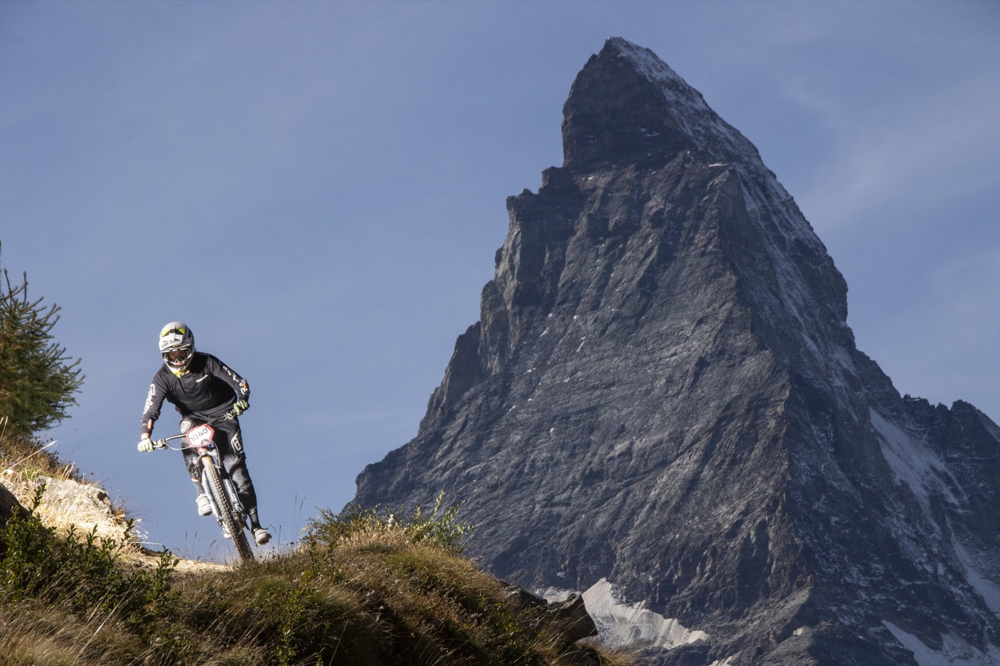
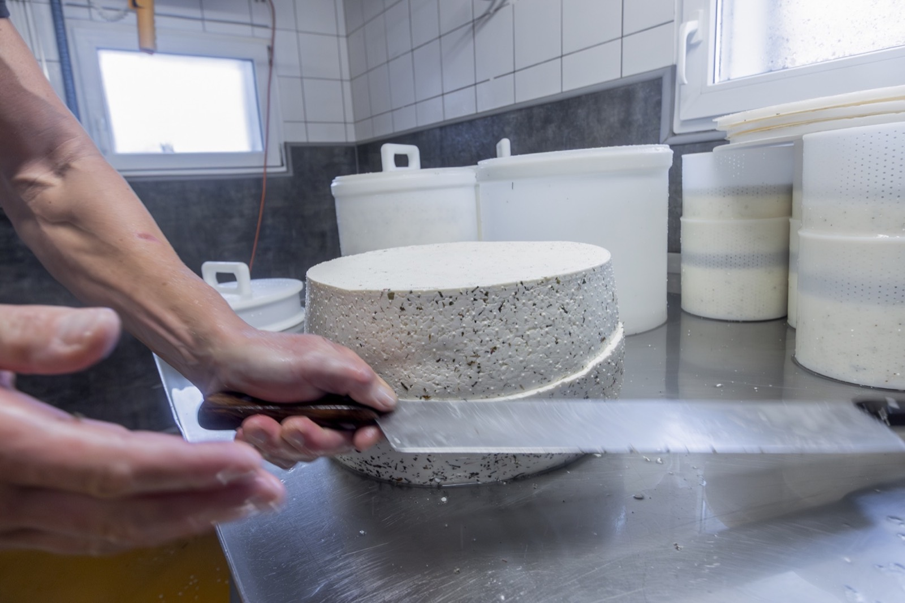
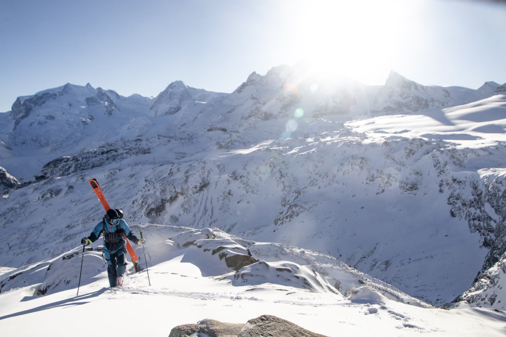
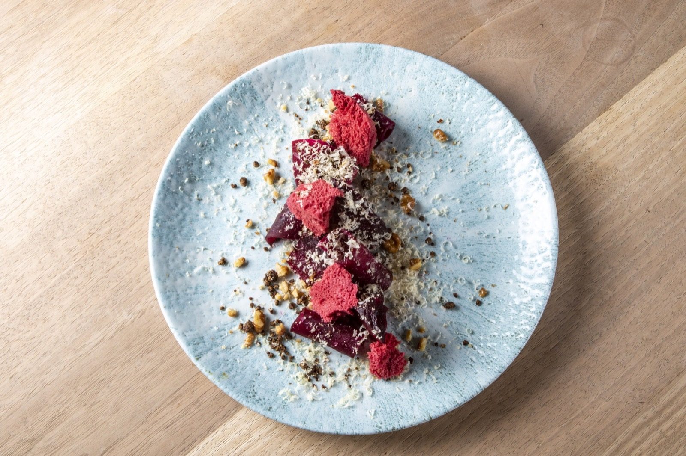

Producción visual
Creamos fotografías y vídeo nuevos para que vuestro equipo o agencia los incorpore a sus campañas, web, acciones promocionales y presentaciones.

UNA PROPUESTA DE JUAN AIZPURU · 2027
Paisajes, sabores y personas. Una producción de fotografía y vídeo para mostrar lo que hace especial al territorio y convertirlo en razones para visitarlo.
DESCUBRIR LA PROPUESTA ↘Crear imágenes nuevas que ayuden a Visit Navarra a promocionar experiencias reales, a través de las personas que conocen y cuidan el territorio.
Navarra ofrece paisajes, vida rural, quesos, rutas y alojamientos con los que construir historias visuales. Juntos elegiríamos los lugares, las estaciones y los objetivos que más os interese comunicar.
La producción puede recorrer distintas zonas de Navarra y combinar una mirada de destino con historias concretas de quienes viven y trabajan en él.

EXPERIENCIA EN FOTOGRAFÍA DE DEPORTE
Fotografía de deporte y paisaje: una muestra de mi trabajo para imaginar nuevas historias en Navarra.
Propuestas iniciales para desarrollar con vuestro equipo, adaptadas a vuestros públicos y prioridades.
Seguir el recorrido de un producto desde el paisaje y el trabajo ganadero hasta la elaboración del queso y la experiencia gastronómica. Fotografías y vídeo con productores reales, para acercar al viajero a los sabores y a las personas que los hacen posibles.
PARA QUÉ: PROMOCIÓN ENOGASTRONÓMICA · HISTORIAS DE PRODUCTORES · EXPERIENCIAS LOCALES
Crear una ruta visual que conecte caminos, pueblos, alojamiento y encuentros locales. Enseñar cómo se vive una estancia, desde el primer paisaje hasta las pequeñas paradas que dan carácter al viaje.
PARA QUÉ: PROMOCIÓN DE DESTINO · RUTAS · WEB Y CAMPAÑAS
Mostrar rutas a pie o en bicicleta junto a guías y participantes, combinando paisaje, acción y momentos tranquilos. Una producción que ayude a presentar experiencias adecuadas a los públicos que queráis atraer.
PARA QUÉ: TURISMO ACTIVO · NATURALEZA · CAMPAÑAS TEMÁTICAS
Volver al territorio en distintos momentos del año para retratar cómo cambian el paisaje, los productos y la vida local. El calendario y las zonas se decidirían con Visit Navarra.
PARA QUÉ: RENOVAR EL BANCO VISUAL · COMUNICACIÓN DURANTE EL AÑO

GASTRONOMÍA · UNA HISTORIA POR CONTAR
Una muestra de mi trabajo fotográfico con productores, para imaginar nuevas historias gastronómicas en Navarra.

03 / CERCA DEL TERRITORIO
Desde Bilbao puedo desplazarme y trabajar en distintas zonas de Navarra durante el tiempo que acordemos. También tengo posibilidad de alojarme en Isaba cuando el proyecto requiera producir en esa zona.
Trabajaría con guías, productores, alojamientos y colaboradores locales propuestos junto a vuestro equipo. Podemos plantear una estancia concentrada o varias visitas a lo largo del año.

GASTRONOMÍA · MUESTRA DE TRABAJO
Dos maneras de colaborar, según lo que vuestro equipo necesite.
Los contenidos, la duración, los formatos y la licencia de uso se definirán según el proyecto. Juan conserva la autoría y la propiedad del material.
Entender qué lugares, experiencias y públicos queréis impulsar.
Elegir historias y colaboradores locales y acordar el plan de producción.
Fotografiar y grabar en el territorio con el tiempo necesario.
Preparar los materiales finales para los usos acordados.
Soy fotógrafo y realizador, con base en Bilbao y experiencia en viajes, naturaleza y deportes. Trabajo con un equipo profesional y adapto cada producción a los objetivos del cliente, cuidando tanto la imagen como las personas que aparecen en ella.
DESCUBRIR MI TRABAJO ↗HABLEMOS DE NAVARRA
Me gustaría conocer vuestras prioridades y preparar una propuesta concreta para el territorio y la campaña que tengáis en mente.
HABLEMOS DEL PROYECTO ↗aizpurumedia.com ↗